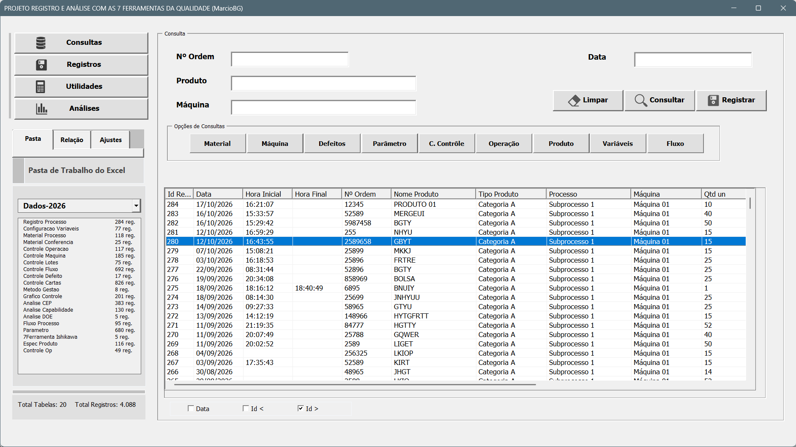
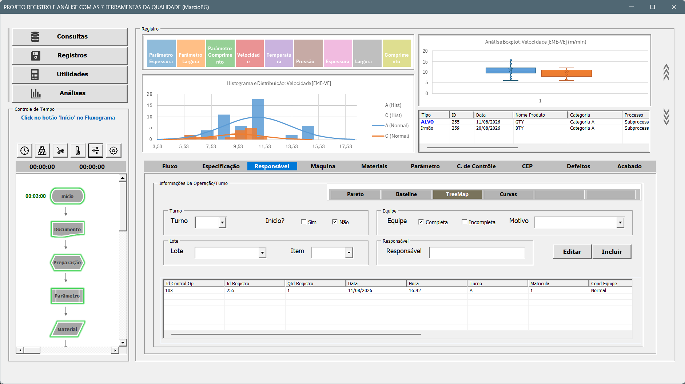
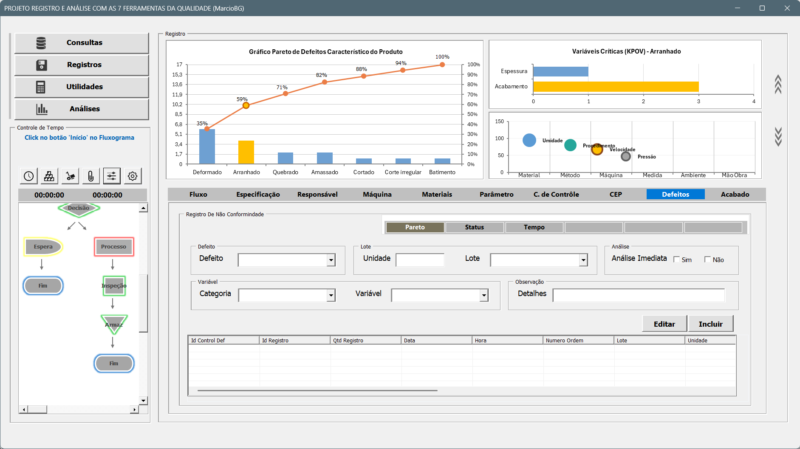
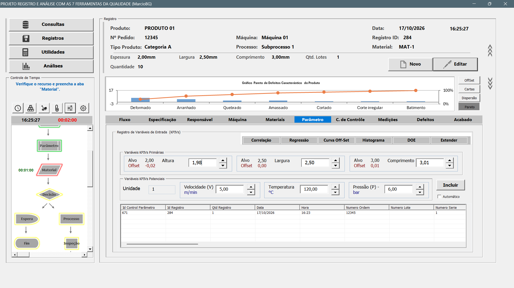
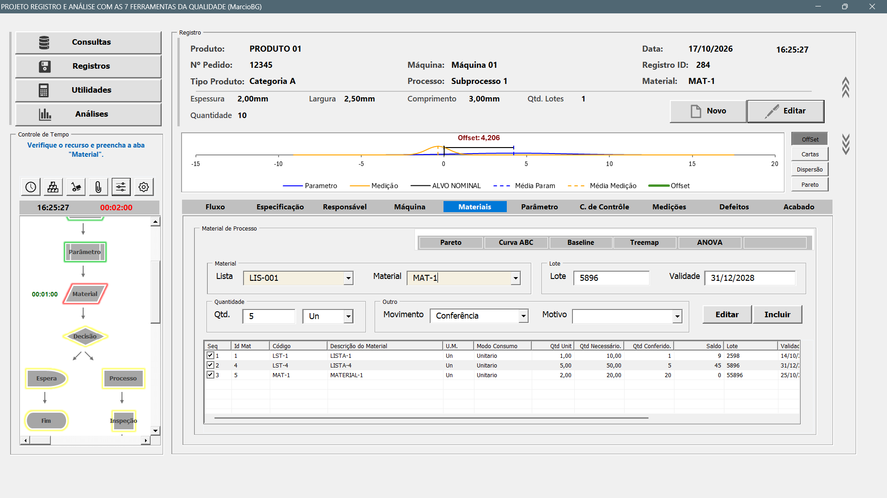
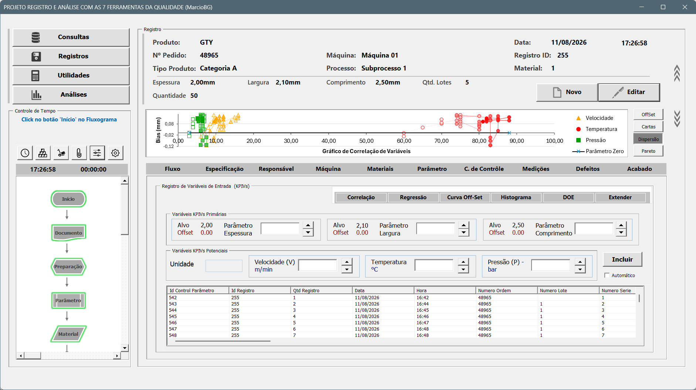

Projeto 2: 7 Ferramentas da Qualidade.
Video de Apresentação do Sistema.
Video de Apresentação do Sistema.
O sistema possuí consulta dos dados registrados de forma facilitada e dinâmica, onde é possível organizar documentos por ano, mês ou outro critério.

Aba de Consulta dos Dados Registrados.

Utilização de documento externo do Excel para registro de dados,
sendo possíveis multiplas pastas, com tabelas criadas automaticamente.
O sistema de registro possuí várias abas para registrar dados de produção, incluindo informações sobre quantidades produzidas, tempos de produção, eficiência etc.

Durante os registros dos dados, as análises são realizadas instantaneamente.

Análise de dados em tempo real.

Gráficos "Mini e Grande" para visualização de dados.

Aba de Registro.